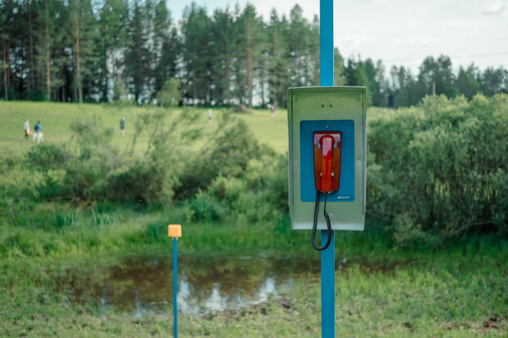
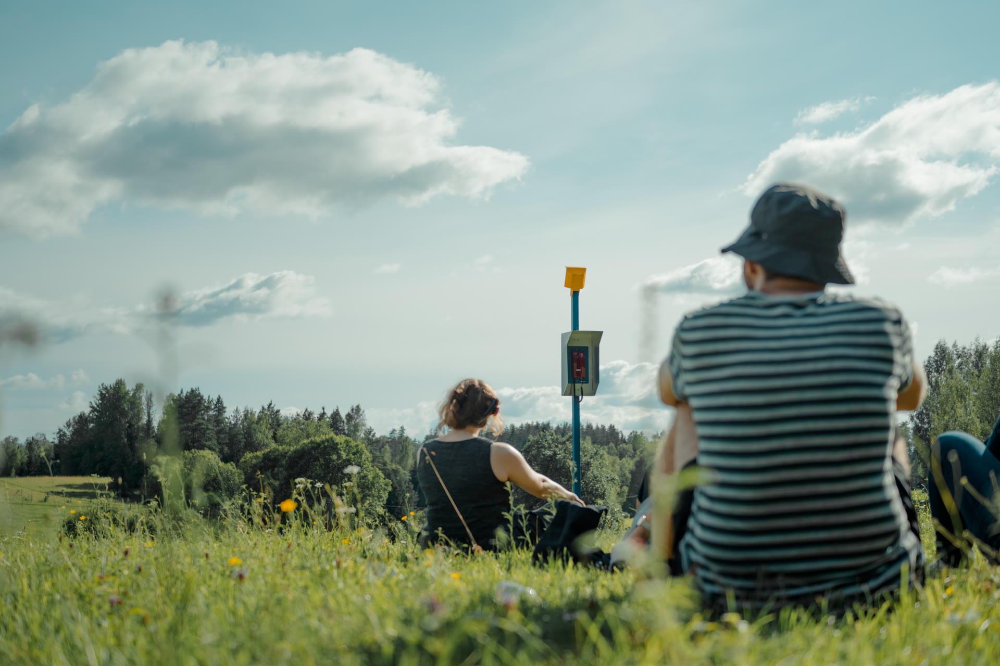
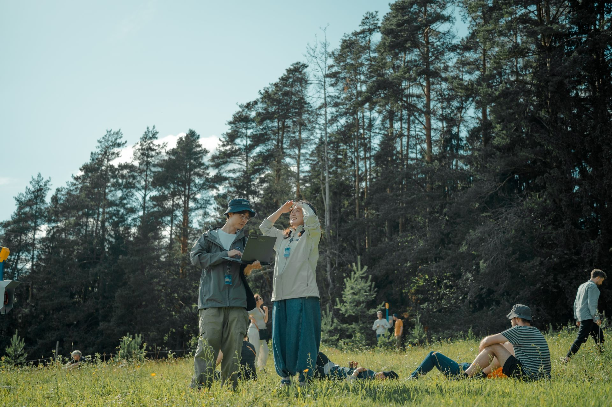
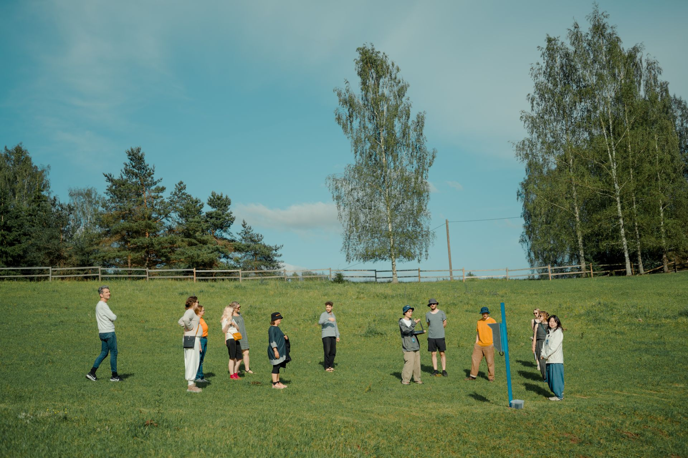
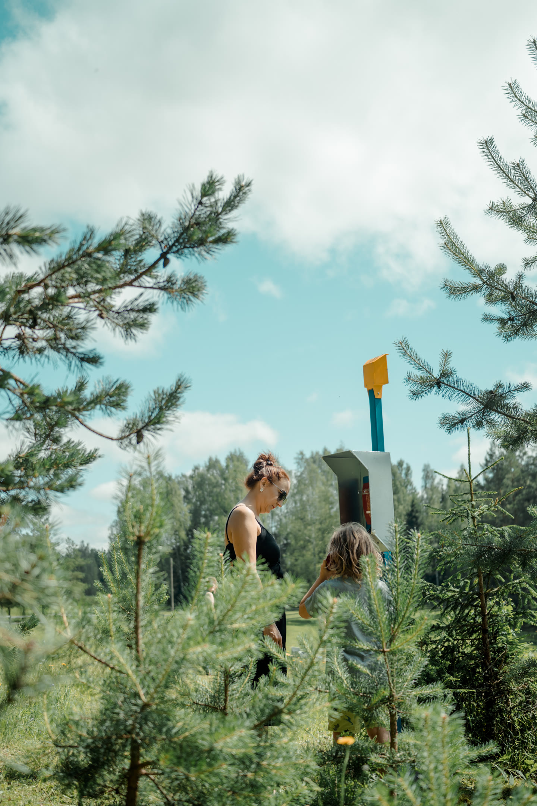

Nephophile
Awards
Wild Bits Art & Tech Grant, Maajaam, Ojaveere, Estonia
Showcase / Press
Wild Bits 2025, Maajaam, Ojaveere, Estonia
Tools / Medium
ESP32, Custom Electronics, Stainless Steel, 3D Prints, No-Dail Wall Phone, Custom AI agents
“Nephophile” are machines that observe clouds.
They are protagonists from Yuguang Zhang and Tong Wu's world-building project
"Bureau of Cloud Management" — an imagined
alternate reality
where human and AI cloud observers (codename "Nephophile")
are both tasked with observing and documenting clouds under
systematized workflow.
Cloud Observing Machines
In the wild field of Maajaam, Estonia, three Nephophile devices, each consisting of a camera, a phone booth and an AI agent connected between them, are scattered across the lawn. They are positioned to study clouds differently—one sees through trees, one watches the pond, and one views the open sky.


Each day, the three devices capture photos of clouds in their respective environments. Inside
each device, an AI agent
composed of a VLM and an LLM with knowledge of "cloud" suppressed, is tasked to digest such
captures and develop new understanding of clouds.
The captured scenes over time gradually accumulate and
become their primary sources for learning what "clouds" could be.
The paired phone booth to each camera is the outlet for visitors
to catch a snippet of this ongoing observation. Visitors can lift
telephones to hear how situated experiences gradually shape
divergent yet intimate definitions of "clouds."
Exhibition View @ Wild Bits, Majaam, Ojaveere, Estonia



All photos by Ya Chuan Chen (J.)